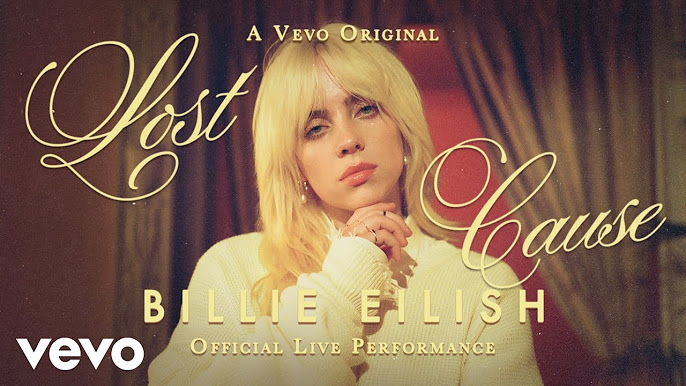
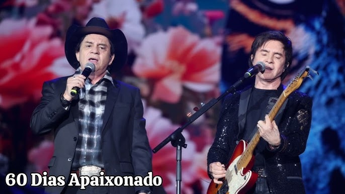
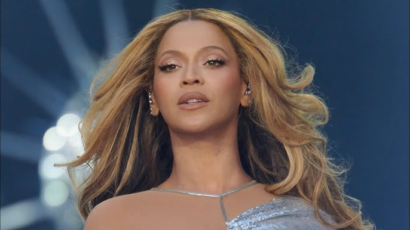
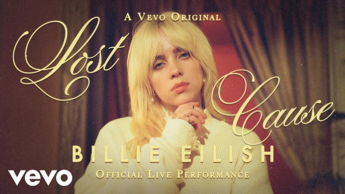
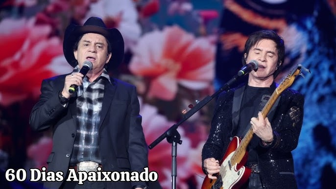
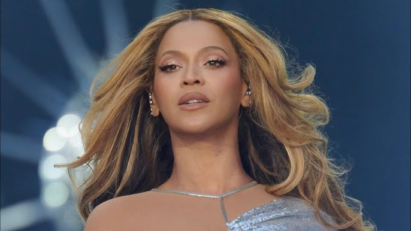

Gêneros Musicais
Explore os gêneros musicais mais populares de diferentes estilos, desde as batidas animadas do funk, passando pela elegância do forró, até o ritmo envolvente da eletrônica. Cada gênero traz uma experiência única e conecta culturas ao redor do mundo.
Forró
Ritmos tradicionais do Nordeste brasileiro, com suas danças contagiantes e melodias marcantes.
Sertanejo
O sertanejo é um dos maiores estilos musicais do Brasil, celebrando as raízes rurais e a vida no campo.
Funk
Ritmos urbanos e dançantes que dominam as ruas, com letras que falam sobre a vida nas grandes cidades.
Eletrônica
Batidas eletrônicas envolventes que fazem qualquer pista de dança ferver.
POP
Músicas com uma mistura de ritmos globais e grandes sucessos que dominam as paradas de sucesso.
Rock
O rock é um gênero cheio de atitude e energia, com suas guitarras distorcidas e letras emocionantes.
 




